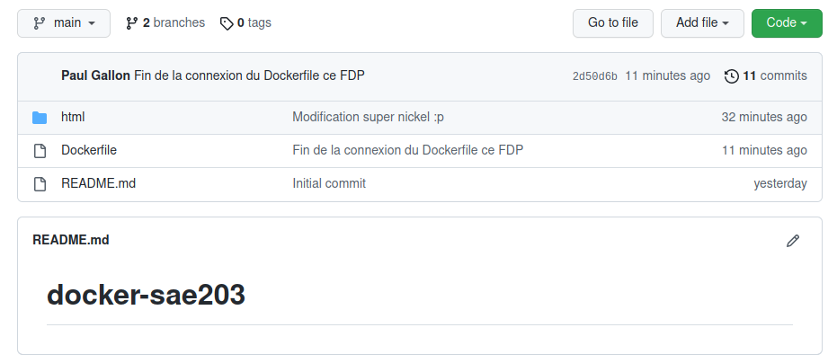
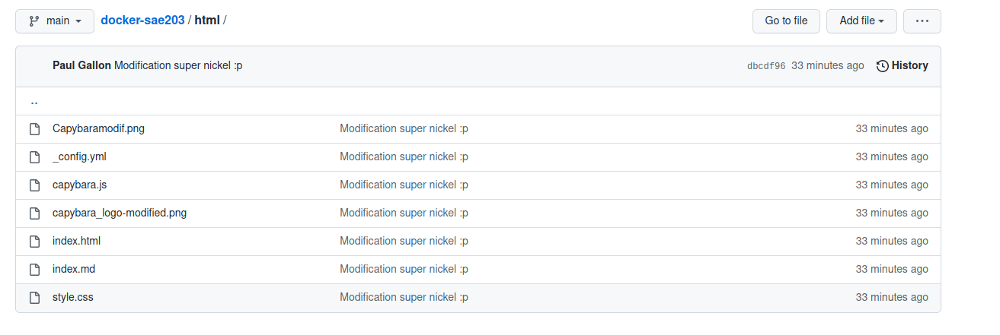

Nous avons décidé de faire un site internet de vidéo à la demande ayant comme principal intérêt des vidéos de capybaras.
Notre
Figure 1 : Branche main du github
Notre
Figure 2 : Répertoire html de la branche main
Nous avons décidé de faire un site internet de vidéo à la demande ayant comme principal intérêt des vidéos de capybaras.
Le lien ci-dessous permet d'accéder à notre site internet via le lien http://di-docker:21160/ .
Capybarahub